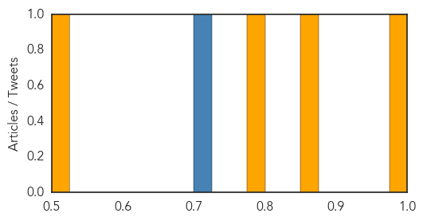
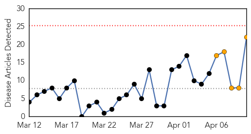
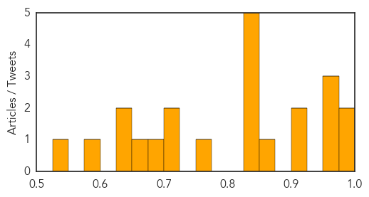

Cholera
30-Day Web Trend
1 alerts, 0 warnings

30-Day Twitter Trend
0 alerts, 0 warnings

Article Locations

Article Confidences
Top Articles:
Top Tweets:
- 0.904
- Guinea had large cholera outbreak in 2012- time to place on the map for many reasons besides ebola http://t.co/6XSJ7hf9dm
Measles
30-Day Web Trend
0 alerts, 5 warnings

30-Day Twitter Trend
0 alerts, 0 warnings

Article Locations

Article Confidences
Top Articles:
- 0.996
- Measles outbreaks in Canada outsize U.S.
- 0.995
- Why are Canadian measles outbreaks so large?
- 0.971
- Vaccines an important preventative measure, medical officer says
- 0.960
- Getting vaccines helps protect all
- 0.953
- No measles cases in Durham Region
- 0.918
- Measles hits Manitoba
- 0.910
- Case of Measles Confirmed in Maricopa County
- 0.874
- Measles stronger in Vietnam, even as infection rates drop
- 0.850
- Traveler with measles may have exposed others in Valley
- 0.849
- Case of measles reported in Northampton; Smith College faculty member afflicted, college issues warning
- 0.847
- 25 children die of measles
- 0.842
- Traveler with measles may have exposed others in Valley
- 0.829
- Vaccines save lives but many snub them through bad information
- 0.768
- Measles alert prompts warnings about parents forgoing kids’ vaccines – Cronkite News
- 0.713
- Measles Cases Linked to U.S. Adoptions of Chinese Children: CDC
- 0.707
- Measles cases linked to US adoptions of Chinese children, CDC reports
- 0.693
- Measles outbreak in Phoenix puts Tucson on alert
- 0.661
- Whooping cough returns to Nevada
- 0.631
- ETHIOPIA: Urgent assistance needed for South Sudanese refugees
- 0.626
- Parents, you are being lied to. Here's the proof.
- 0.598
- Ethiopia: Urgent assistance needed for South Sudanese refugees
- 0.545
- Ethiopia: urgent assistance needed for South Sudanese refugees
Top Tweets:
-
No tweets found for Apr 10, 2014